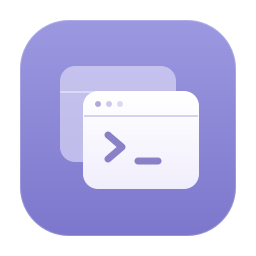

Poppy Deep
Your digital life.
In safe hands.
The home for your Mac’s backup and security. Less worrying about what could go wrong. More getting on with what matters.
THOUGHTFUL APPS. MADE FOR MAC.
Protection. Everyday superpowers. A better place to build.
Three thoughtful apps for the Mac you love.

Velvet Linux and containers, at home on Mac.A first look at what we’re building.
THE POPPY FAMILY
For the files you can’t lose.
The little things you do every day.
And the next big thing you’ll build.
Poppy Deep
The home for your Mac’s backup and security. Less worrying about what could go wrong. More getting on with what matters.
Poppy MagicBox
Space to spare. Files unpacked. Windows in their place. Your everyday Mac essentials, brought together in one beautifully simple app.
See what’s in the boxA LITTLE MAGIC GOES A LONG WAY
The right tool, right when you need it.
See the big picture. Find the big files.
Pack it up. Or get straight to what’s inside.
A clearer view of what’s happening inside.
Your useful little things, all within reach.
A calmer workspace is a shortcut away.
A peek inside MagicBox. Illustrative interface concept.
Poppy Velvet
Your Mac on the outside. Your Linux world within. A smoother place for virtual machines, containers, and the ideas you’re ready to build.
THE POPPY WAY
We believe great Mac apps should feel like they belong.
Thoughtful in the details. Simple in the everyday.
One design language. Three focused apps. Everything feeling right at home on your Mac.
From protecting your files to clearing a little space to building something entirely new.
Useful tools, brought together with care. So you can spend less time managing and more time making.

GOOD THINGS ARE GROWING
Deep. MagicBox. Velvet.
A new family of Mac apps, thoughtfully in the making.